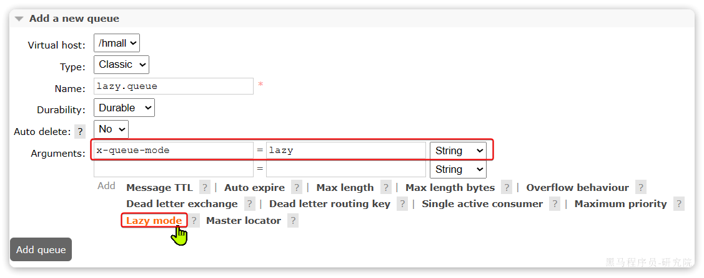
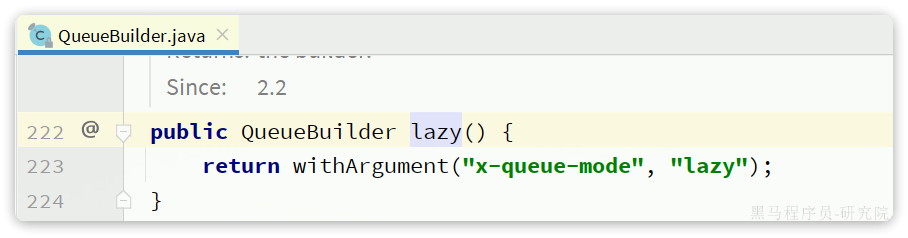

MQ的可靠性
消息到达MQ以后，如果MQ不能及时保存，也会导致消息丢失，所以MQ的可靠性也非常重要。
1. 数据持久化
为了提升性能，默认情况下MQ的数据都是在内存存储的临时数据，重启后就会消失。为了保证数据的可靠性，必须配置数据持久化，包括：
- 交换机持久化
- 队列持久化
- 消息持久化
如果说发送端确认机制是为了防止消息“死在半路上”，那么持久化机制就是为了防止消息“死在 MQ 的内存里”。RabbitMQ 默认会将消息暂存在内存中以换取极高的吞吐量，但如果遇到服务器断电、进程崩溃或重启，内存里的数据就会瞬间清空。
为了防止这种情况，我们必须将数据写入磁盘。在 Spring Boot 体系中，实现完全的持久化需要同时达成“铁三角”：交换机持久化、队列持久化、消息持久化。缺一不可。
在 Spring Boot 体系下，官方在设计 API 时采取了“安全第一”的防丢理念。因此，*默认情况下*，使用代码生成的交换机和队列都是持久化的
1. 交换机持久化
交换机不负责存储消息，只负责路由。如果不持久化，MQ 重启后交换机会消失，生产者发送的消息将找不到目的地。
在 Spring Boot 中通过 @Bean 声明交换机时，只需将 durable 参数设置为 true：
@Configuration
public class MqConfig {
@Bean
public DirectExchange myExchange() {
// 参数1: 交换机名称
// 参数2: durable (是否持久化) -> 设为 true
// 参数3: autoDelete (是否自动删除) -> 设为 false
return new DirectExchange("my_direct_exchange", true, false);
}
}
2. 队列持久化
队列是真正用来存放消息的容器。如果不持久化，MQ 重启后队列会被销毁，里面的消息自然也就跟着灰飞烟灭了。
声明队列时，同样将 durable 设置为 true
@Configuration
public class MqConfig {
@Bean
public Queue myQueue() {
// 参数1: 队列名称
// 参数2: durable (是否持久化) -> 设为 true
return new Queue("my_queue", true);
// 或者使用 Builder 模式 (推荐，语义更清晰)
// return QueueBuilder.durable("my_queue").build();
}
}
3. 消息持久化
这是面试中最容易踩坑的地方！ 很多开发者以为把队列持久化了，里面的消息就安全了。其实不然，如果队列持久化了，但消息没有持久化，MQ 重启后，队列还在，但里面的消息会全空。
消息持久化要求我们在发送消息时，将消息的 DeliveryMode 属性设置为 2（持久化）。
好消息是：在 Spring Boot 环境下，当你使用 RabbitTemplate 的 convertAndSend 方法发送消息时，Spring 底层已经默认帮你把消息体中的 DeliveryMode 设置为持久化模式了。你不需要专门写额外的代码，直接发送即可。
4. 注解
durable = "true"：在 @Queue 和 @Exchange 注解中，默认其实就是 true，但显式写出来会让代码的语义（持久化防丢失）更加明确
@Slf4j
@Component
public class MyMessageConsumer {
/**
* @QueueBinding: 核心绑定注解，用于将队列和交换机绑定在一起
* value: 配置队列 (Queue)
* exchange: 配置交换机 (Exchange)
* key: 配置路由键 (RoutingKey)
*/
@RabbitListener(bindings = @QueueBinding(
// 1. 声明队列：名称为 my_queue，durable = "true" 表示开启队列持久化
value = @Queue(name = "my_queue", durable = "true"),
// 2. 声明交换机：名称为 my_direct_exchange，类型为 direct，开启持久化
exchange = @Exchange(name = "my_direct_exchange", type = "direct", durable = "true"),
// 3. 声明路由键：绑定这两者的桥梁
key = "my.routing.key"
))
public void processMessage(String message) {
log.info("成功接收到 MQ 消息: {}", message);
// TODO: 在这里编写你的业务逻辑，比如扣减库存、更新订单状态等
}
}
架构设计的 Trade-off（权衡与避坑）
在实际的企业级项目落地和日常实习的面试中，面试官往往会追问持久化带来的副作用：
-
性能极速下降：写磁盘（I/O 操作）的速度远远慢于写内存。全面开启持久化后，RabbitMQ 的单机吞吐量可能会从每秒几万条骤降到几千条。
-
木桶效应：队列持久化 + 消息持久化，两者必须同时存在，消息才能真正存活。
-
并非 100% 绝对安全：
哪怕你开启了全套持久化，依然存在一个极其微小的“真空期”：当 MQ 刚收到消息，还没来得及把数据刷入磁盘（fsync 操作），服务器正好断电了。此时消息依然会丢失。
解决办法：对于核心金融数据，一般会结合 Confirm 机制 + 仲裁队列（Quorum Queues），确保消息不仅落盘，还要在多个节点上复制成功后，才给生产者返回 ack=true。
2. LazyQueue
在默认情况下，RabbitMQ会将接收到的信息保存在内存中以降低消息收发的延迟。但在某些特殊情况下，这会导致消息积压，比如：
- 消费者宕机或出现网络故障
- 消息发送量激增，超过了消费者处理速度
- 消费者处理业务发生阻塞
一旦出现消息堆积问题，RabbitMQ的内存占用就会越来越高，直到触发内存预警上限。此时RabbitMQ会将内存消息刷到磁盘上，这个行为成为PageOut. PageOut会耗费一段时间，并且会阻塞队列进程。因此在这个过程中RabbitMQ不会再处理新的消息，生产者的所有请求都会被阻塞。
为了解决这个问题，从RabbitMQ的3.6.0版本开始，就增加了Lazy Queues的模式，也就是惰性队列。惰性队列的特征如下：
- 接收到消息后直接存入磁盘而非内存（内存中只保留最近的消息，默认2048条）
- 消费者要消费消息时才会从磁盘中读取并加载到内存（也就是懒加载）
- 支持数百万条的消息存储
Lazy Queue 用极其稳定的海量堆积能力（可以轻松堆积数千万条消息而不崩溃）和超低的内存占用，换取了一点点延迟时间的增加（因为每次消费都要读盘）
而在3.12版本之后，LazyQueue已经成为所有队列的默认格式。因此官方推荐升级MQ为3.12版本或者所有队列都设置为LazyQueue模式。
1. 控制台配置Lazy模式
在添加队列的时候，添加x-queue-mod=lazy参数即可设置队列为Lazy模式：

2. 代码配置Lazy模式
在利用SpringAMQP声明队列的时候，添加x-queue-mod=lazy参数也可设置队列为Lazy模式：
@Bean
public Queue lazyQueue(){
return QueueBuilder
.durable("lazy.queue")
.lazy() // 开启Lazy模式
.build();
}
这里是通过QueueBuilder的lazy()函数配置Lazy模式，底层源码如下：

当然，我们也可以基于注解来声明队列并设置为Lazy模式：
@RabbitListener(queuesToDeclare = @Queue(
name = "lazy.queue",
durable = "true",
arguments = @Argument(name = "x-queue-mode", value = "lazy")
))
public void listenLazyQueue(String msg){
log.info("接收到 lazy.queue的消息：{}", msg);
}
3. Quorum
在 Spring Boot / Spring AMQP 中，使用 Quorum 队列与 Lazy 队列主要是通过设置队列参数 x-queue-type 和 x-queue-mode 来完成的，可以通过 Java Config (@Bean) 或 注解 (@RabbitListener) 方式声明。
1. 使用 Java Config 显式声明
使用 QueueBuilder 可以最直观地链式调用内置方法配置：
@Configuration
public class RabbitQueueConfig {
// 1. 声明 Quorum 队列（推荐用于核心高可用业务）
@Bean
public Queue quorumQueue() {
return QueueBuilder.durable("order.quorum.queue")
.quorum() // 相当于添加参数 "x-queue-type": "quorum"
// .withArgument("x-delivery-limit", 5) // 可选：设置死信重试最大投递次数
.build();
}
}
2. 使用注解声明
如果在消费者端直接使用 @RabbitListener 动态建队列，需通过 @Argument 设置属性：
@Component
public class MessageConsumer {
// 声明并监听 Quorum 队列
@RabbitListener(bindings = @QueueBinding(
value = @Queue(
value = "order.quorum.queue",
durable = "true",
arguments = @Argument(name = "x-queue-type", value = "quorum")
),
exchange = @Exchange(value = "order.exchange", type = ExchangeTypes.TOPIC),
key = "order.#"
))
public void handleQuorumMessage(String message) {
// 业务逻辑处理
}
}
4. 对比
Quorum 队列与 Lazy 队列是 RabbitMQ 中解决不同架构痛点的两套机制：Quorum 队列解决的是“集群高可用与数据强一致”问题，而 Lazy 队列解决的是“海量消息积压与内存保护”问题。
Quorum 队列（高可用与数据安全）
- 定位：RabbitMQ 3.8 引入的队列类型（
x-queue-type: quorum），用于全面替代已废弃的镜像队列（Mirrored Queue）。 - 机制：基于 Raft 共识算法，采用“一主多从”的分布式副本架构。消息必须被集群中过半数（Quorum）节点写入磁盘后，才算投递成功。
- 核心价值：单点宕机自动选举新 Leader，保证高可用性与数据零丢失。
Lazy 队列（惰性队列 - 内存保护）
- 定位：RabbitMQ 3.6 引入的队列运行模式（
x-queue-mode: lazy），主要作用于经典队列（Classic Queue）。 - 机制：消息到达后直接写入磁盘，尽可能不在内存（RAM）中常驻缓存；只有当消费者需要拉取消息时，才按需加载到内存中。
- 核心价值：防止百万级消息暴涨积压时耗尽服务器 RAM 导致 Broker 崩溃。
Quorum 队列 vs Lazy 队列核心对比
| 维度 | Quorum 队列 (Quorum Queue) | Lazy 队列 (Lazy Queue) |
|---|---|---|
| 属性分类 | 独立的 队列类型 (x-queue-type) |
队列的 运行模式 (x-queue-mode) |
| 核心目的 | 保证高可用、容灾与数据强一致性 | 降低内存占用，承受海量消息积压 |
| 底层原理 | Raft 共识协议 + 多数派节点磁盘持久化 | Disk-first（磁盘优先存储），按需读入内存 |
| 高可用能力 | 原生支持，自动故障转移与副本同步 | 无原生分布式副本（依赖单节点或经典模式） |
| 性能侧重 | 强调网络与集群吞吐，防止网络分区丢数据 | 依赖磁盘 I/O 吞吐，牺牲部分读写延迟换取内存安全 |
| 典型场景 | 订单、支付、交易等不能丢消息的核心业务 | 离线批处理、消费者宕机、流量峰值极高的削峰填谷 |
在现代 RabbitMQ 版本（3.12+）中，Quorum 队列在内部实现上也融合了类似 Lazy 的页丢弃机制（自动将非热点消息从内存预读释放到磁盘），因此生产环境推荐将 Quorum 队列 作为高可靠业务的默认首选。
Quorum和lazy不能一起使用，也没有必要。 x-queue-mode: lazy 是经典队列（Classic Queue）专有的配置参数，而 Quorum 队列底层天然就具备惰性（Lazy）落盘与按需加载机制。